JB TAK FODEGA NHI .... TB TK CHODEGA NHI .... (MAANG)
DPL24 Rod Cutting
We are given a rod of size ‘N’. It can be cut into pieces. Each length of a piece has a particular price given by the price array. Our task is to find the maximum revenue that can be generated by selling the rod after cutting( if required) into pieces.
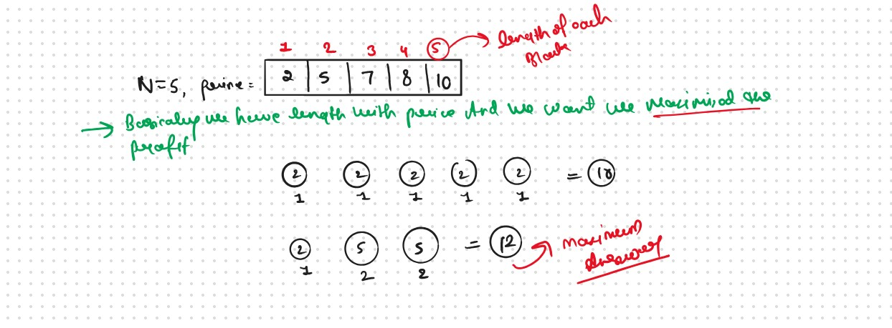
Bacially this Problem is the Observation Based Problem Same like DPL23 Unbounded Knapsack & infinite Supply Jut we need to Identify the Pattern, Only need to Indetify the maxWeight or W (Knapsack Capicity) Becouse in this Problem We Have Not Given the Directily W of the Knapsack, We Need to Identify the W and Remaing Thing will be Same as like in DPL23
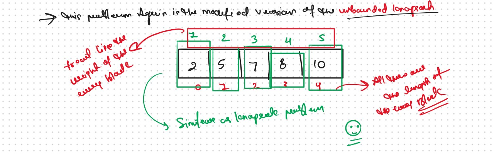
maxWeight or W (Knapsack Capicity) ?
In Both Problems DPL19 & DPL23 We have Given a W (Knapsack Capicity), but in this Problem we have not a W (Knapsack Capicity), So what we Do?
Now here we used the len(price) that we given, used as a W (Knapsack Capicity) and we go with same code and logic with DPL23
Now Remaining Entire 👇 Process will Be Same As Like in DPL23
In DPL19 We Try to Find Out the Maximum Profit Under the Given Knapsack Bag Weight and we used the Items at only One Time
In this Problem We Try to Find Out the Maximum Profit But This Problem Based on the infinite Supply Same Like We Do in DPL20 and DPL22 and We can take a single item any number of times he wants and put it in his knapsack.
That is the Only Difference in Both Problem, Just we Re-Write the Base Case and
This Quesion Again Based on the DPL19 Not Same but We Used the Concept of the Take and notTake Same As in DPL19 only Base Condition Will be Changed
Why a Greedy Solution doesn’t work?
The first approach that comes to our mind is greedy. A greedy solution will fail in this problem because there is no ‘uniformity’ in data. While selecting a local better choice we may choose an item that will in long term give less value.
Let us understand this with help of an example
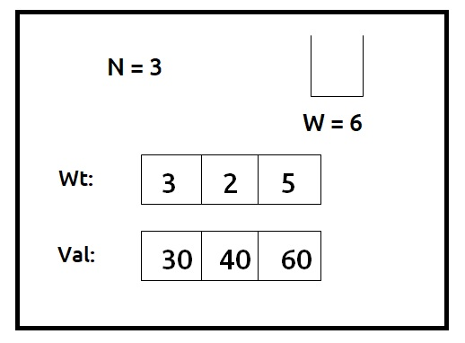
A Greedy solution will be to take the most valuable item first, so we will take an item on index 2, with a value of 60, and put it in the knapsack. Now the remaining capacity of the knapsack will be 1. Therefore we cannot add any other item. So a greedy solution gives us the answer 60.
Now we can clearly see that a non-greedy solution of taking the first two items will give us the value of 70 (30+40) in the given capacity of the knapsack.
Recursice Approch
Steps to form the Recursive Solution
Step 1: Express the problem in terms of indexes.
We are given ‘n’ items. Their weight is represented by the ‘wt’ array and value by the ‘val’ array. So clearly one parameter will be ‘ind’, i.e index up to which the array items are being considered.
There is one more parameter “W”. We need the capacity of the knapsack to decide whether we can pick an array item or not in the knapsack.
So, we can say that initially, we need to find fun(n-1, W) where W is the overall capacity given to us. fun(n-1, W) means we are finding the maximum value of items that the thief can steal from items with index 0 to n-1 capacity W of the knapsack.
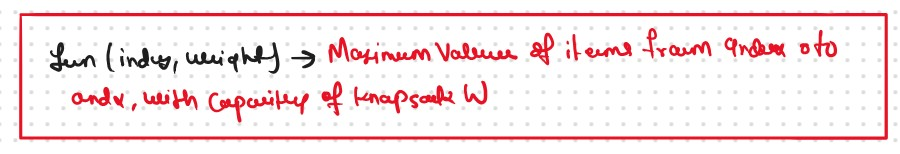
Our Base Case
If ind==0, it means we are at the first item. Now, in an Rod Cutting we can pick an item any number of times we want. As there is only one item left, we will pick for W/weight[0] times because we ultimately want to maximize the value of items while respecting the constraint of weight of the knapsack. The value added will be the product of the number of items picked and value of the individual item. Therefore we return (W/weight[0]) * val[0].
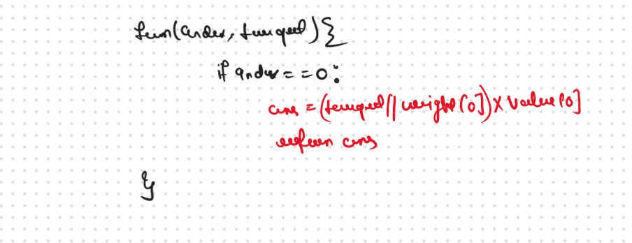
Step 2: Try out all possible choices at a given index.
We need to generate all the subsequences. We will use the pick/non-pick technique as discussed in, That we All Ready Learn in the Recursion Series.
We have two choices:
Exclude the current element in the subsequence: We first try to find a subsequence without considering the current index item. If we exclude the current item, the capacity of the bag will not be affected and the value added will be 0 for the current item. So we will call the recursive function f(ind-1,W)
Include the current element in the subsequence: We will try to find a subsequence by considering the current item to the knapsack. As we have included the item, the capacity of the knapsack will be updated to W-wt[ind] and the current item’s value val[ind] will also be added to the further recursive call answer. We will make a recursive call to f(ind-1, W- wt[ind]).
VVVV Important Point
Now here is the catch, as there is an unlimited supply of
coins, we want to again form a solution with the same coin
value. So we will not recursively call for fun(ind-1,
Target-arr[ind]) rather we will stay at that index only and
call for fun(ind, Target-arr[ind]) to find the answer.
Note: We will consider the current item in the subsequence only when the current element’s weight is less than or equal to the capacity ‘W’ of the knapsack, if it isn’t we will not be considering it.
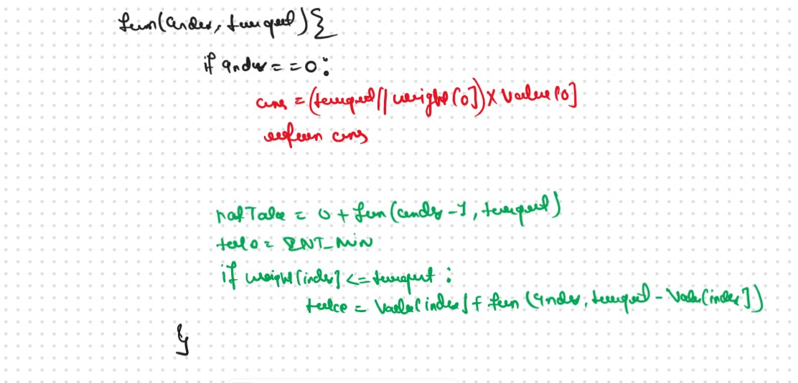
Step 3: Return the maximum of take and notTake
As we have to return the maximum amount of value, we will return the max of take and notTake as our answer.
The final pseudocode after steps 1, 2, and 3:
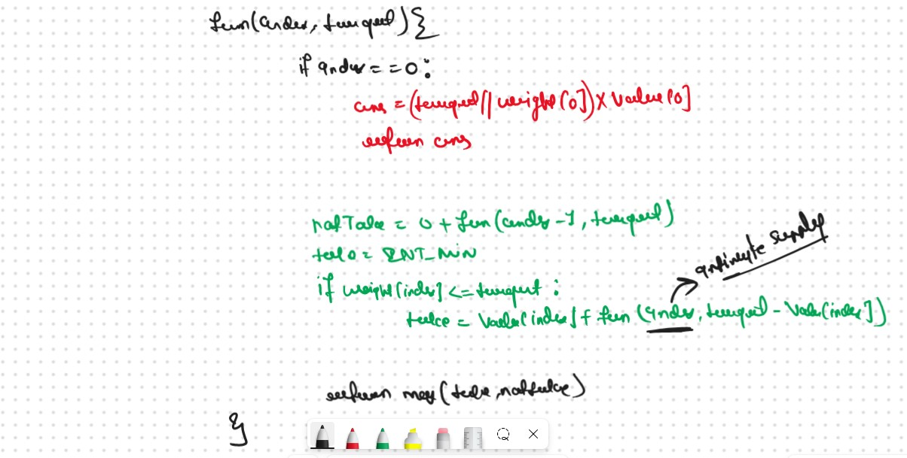
Recursion Java Code
Sb Mai He Kru ...
Khud Bhi Kr le Khuch ..... Nalayk
Time & Space Complexity
Time Complexity: O(2^N)
Reason: Exponential Time we find out the all the Possible Path
Space Complexity: O(N)
Reason: We are using a recursion stack space(O(N))
Memoization Approch
If we observe in the recursion tree, we will observe a many number of overlapping subproblems. Therefore the recursive solution can be memoized for to reduce the time complexity.
Steps to convert Recursive code to memoization solution:
Create a dp array of size [n][W+1]. The size of the input array is ‘N’, so the index will always lie between ‘0’ and ‘n-1’. The capacity can take any value between ‘0’ and ‘W’. Therefore we take the dp array as dp[n][W+1]
We initialize the dp array to -1.
Whenever we want to find the answer of particular parameters (say f(ind,target)), we first check whether the answer is already calculated using the dp array(i.e dp[ind][target]!= -1 ). If yes, simply return the value from the dp array.
If not, then we are finding the answer for the given value for the first time, we will use the recursive relation as usual but before returning from the function, we will set dp[ind][target] to the solution we get.
Memoization Java Code
Sb Mai He Kru ...
Khud Bhi Kr le Khuch ..... Nalayk
Time & Space Complexity
Time Complexity:O(N*W)
Reason: There are N*W states therefore at max ‘N*W’ new problems will be solved.
Space Complexity: O(N*W) + O(N)
Reason: We are using a recursion stack space(O(N)) and a 2D array ( O(N*W)).
Tabulation Approch
Tabulation is a
‘bottom-up’ approach where we start from the base case and reach the final answer that we want and Memoization is the
Top-down Approch.
In Tabulation Approch We Just Creat a DP Array Same as Memoization and Simply Convert the Recurance Relation into the form of the Looping
Steps to convert Recursive Solution to Tabulation one.
To convert the memoization approach to a tabulation one, create a dp array with the same size as done in memoization. We can initialize it as 0.
First, we need to initialize the base conditions of the recursive solution.
At ind==0, we are considering the first element, if the capacity of the knapsack is greater than the weight of the first item, we return val[0] as answer. We will achieve this using a for loop.
At ind==0, we are considering the first element, so we will assign its value as (i/wt[0]) * val[0], where i will iterate from 0 to W.
Next, we are done for the first row, so our ‘ind’ variable will move from 1 to n-1, whereas our ‘cap’ variable will move from 0 to ‘W’. We will set the nested loops to traverse the dp array.
Inside the nested loops we will apply the recursive logic to find the answer of the cell.
When the nested loop execution has ended, we will return dp[n-1][W] as our answer.
Tabulation Java Code
Sb Mai He Kru ...
Khud Bhi Kr le Khuch ..... Nalayk
Time & Space Complexity
Time Complexity: O(N*W)
Reason:There are 2 nested loops
Space Complexity: O(N*K)
Reason: We are using an external array of size ‘N*W’. Stack Space is eliminated.
Space Optimization
If we closelly Observed if any Tabulation Approch we used the Some Limited Stuff like: dp[ind][cap] = max(dp[ind-1][cap] ,dp[ind-1][cap-wt[ind]]) for the finding the our ans then definetly here Spaced Optimization is Possible in that types of Problems. Always Remember
Golden Rule
If we required only Prev row and Prev Collom then definetly we can Space Optimized
Every Steps are Same That We Follow in the DPL19 No Need to Change Anything in these Steps, Only Chnage the Recurance Relation and Convert into the loop, and Remaing Things Will be Same.
We see that to calculate a value of a cell of the dp array, we need only the previous row values (say prev). So, we don’t need to store an entire array. Hence we can space optimize it.
We will be space optimizing this solution using only one row.
If we closely observe, we fill in the following manner in two-row space optimization
We will initialize the first row and then using its values we will the next row.
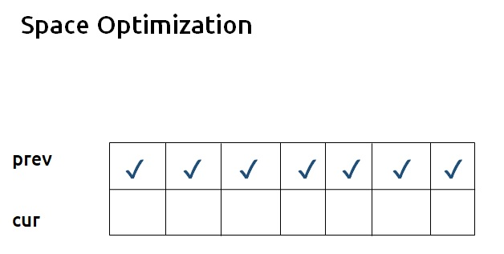
If we clearly see the values required: dp[ind-1][cap] and dp[ind-1][cap – wt[ind]], we can say that if we are at a column cap, we will only require the values shown in the green region and none in the red region shown in the below image ( because cap – wt[ind] will always be less than the cap).
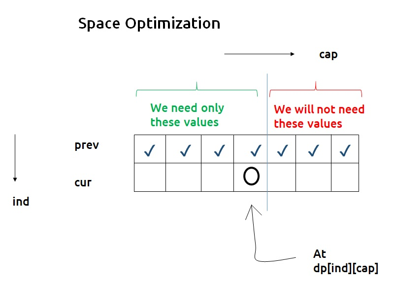
As we don’t want values from the right, we can start filling this new row from the right rather than the left.
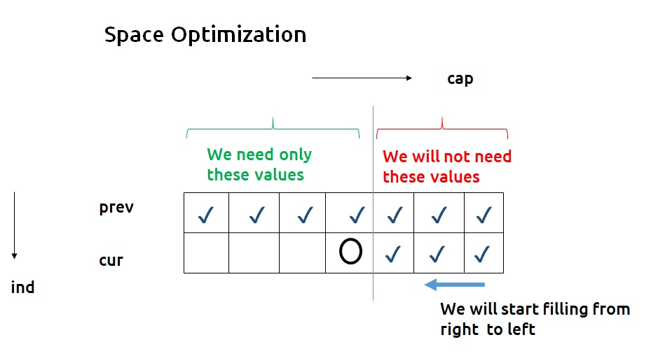
Now here is the catch, if we are filling from the right and at any time we need the previous row’s value of the leftward columns only, why do we need to have two rows in the first place? We can use a single row and overwrite the new computed values on itself in order to store it.
Single Row Space Optimization Approch
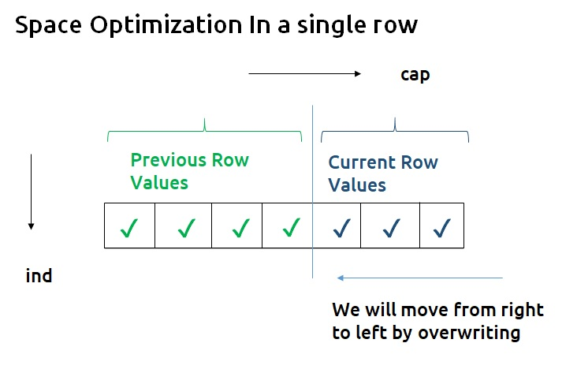
SpaceOptmized Python Code
Most Optimial Python Code 🔥
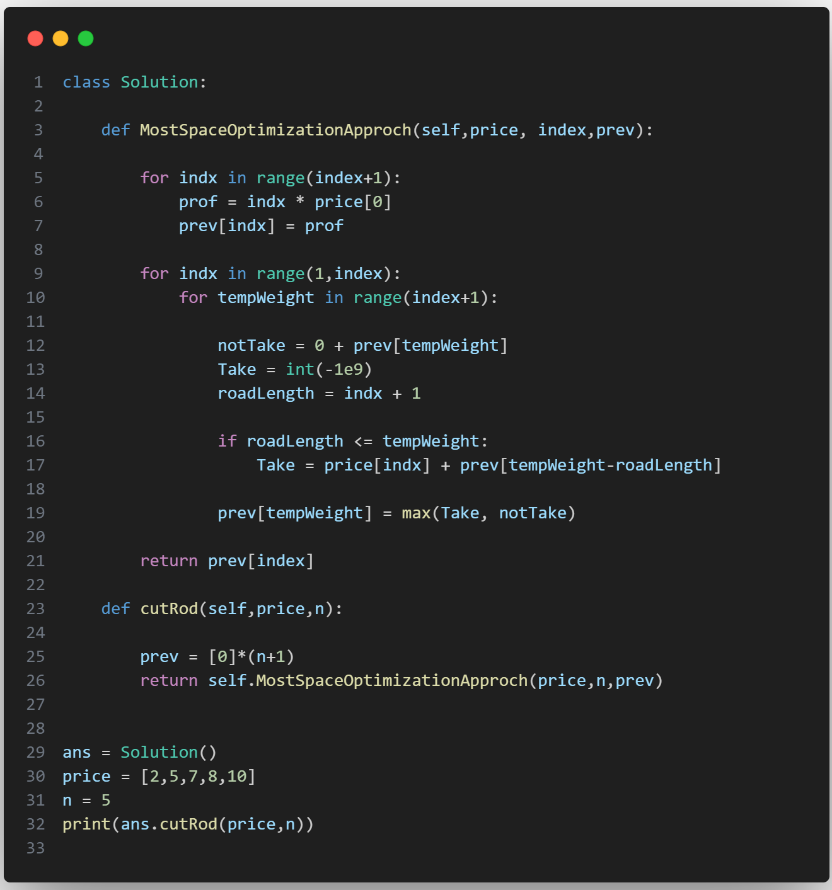
SpaceOptmized Java Code
Sb Mai He Kru ...
Khud Bhi Kr le Khuch ..... Nalayk
Time & Space Complexity
Time Complexity: O(N*W)
Reason: There are three 2 nested loops
Space Complexity: O(W)
Reason: We are using an external array of size ‘W+1’ to store only one row.


.png)
.png)
.png)
.png)
.png)
.png)
.png)
.png)